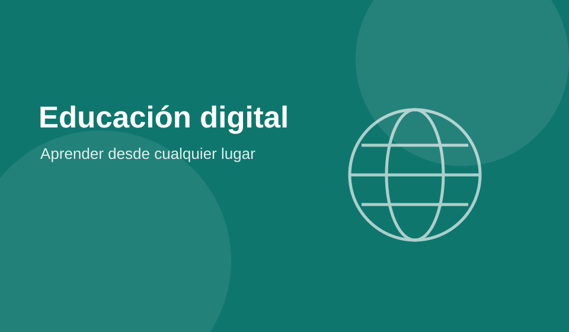

01
Educación y conocimiento
Las plataformas de aprendizaje, las bibliotecas digitales y las videoclases permiten estudiar y compartir recursos en distintos momentos y lugares.
Proyecto académico · HTML5
La web amplía las posibilidades de aprendizaje, colaboración y participación; al mismo tiempo, plantea retos de privacidad y acceso equitativo.

Estos ejemplos muestran aplicaciones habituales, sin asumir que todas las personas cuentan con el mismo acceso.
Las plataformas de aprendizaje, las bibliotecas digitales y las videoclases permiten estudiar y compartir recursos en distintos momentos y lugares.
Los mensajes, las videollamadas y los espacios de trabajo compartidos facilitan coordinar actividades personales, académicas y laborales.
Muchas instituciones ofrecen información, formularios y trámites digitales que pueden reducir desplazamientos y mejorar el acceso a servicios.
La tecnología aporta valor cuando se utiliza con criterio, seguridad e inclusión.